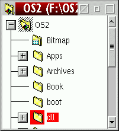
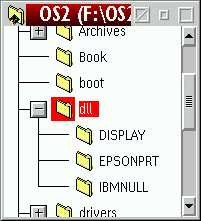

Questa situazione probabilmente sar… capitata molte volte: si vuole espandere la vista ad albero
di una cartella che si trova verso il fondo della finestra.

Normalmente, cliccando sul segno "+" vicino alla directory "dll", l'albero si apre al di fuori della finestra e non Š possibile vederne il contenuto, il che Š fastidioso, perch‚ praticamente ogni altra volta in cui si espande una visualizzazione ad albero Š poi necessario farla scorrere verso il basso manualmente per poterne vedere il contenuto.
XFolder invece, se i nuovi elementi mostrati si trovano fuori dall'area visibile,
fa scorrere automaticamente verso il basso la finestra della cartella:

XFolder controlla internamente la visualizzazione dopo che l'utente ha cliccato sul segno "+" e nel caso, dopo che la WPS ha popolato la cartella, effettua automaticamente lo scorrimento. Questo controllo non causa un carico addizionale alla CPU, poich‚ XFolder semplicemente intercetta internamente la notifica del messaggio PM (per questo motivo Š assurdo che IBM non avesse gi… implementato questa funzionalit…).
XFolder far… scorrere la finestra fino ad includere l'elemento pi— in basso tra quelli da mostrare, a meno che l'albero su cui si Š fatto clic contenga troppi elementi per riuscire a farli rientrare tutti nella finestra. Nel qual caso, XFolder far… scorrere gli elementi espansi fino all'inizio dell'area visibile.
La cosa migliore Š probabilmente provare ad usare questa funzionalit…, in modo da capirne il funzionamento. La cartella di &os2; Š una buona candidata per fare delle prove. Anche se il comportamento automatico potrebbe all'inizio essere un po' irritante, sono sicuro che dopo poco non se ne vorr… pi— fare a meno.
Ô comunque naturalmente possibile disabilitare tale funzione nelle
Impostazioni globali.